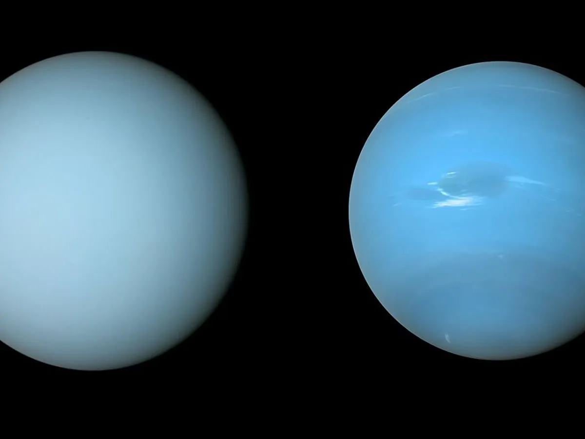

Astrônomos usaram os telescópios para criar um modelo que pudesse corresponder às observações de Netuno e Urano.
Os cientistas determinaram que um excesso de neblina se acumula na atmosfera de Urano, o que lhe confere uma aparência mais clara.
Essa neblina é mais espessa em Urano do que uma camada atmosférica semelhante em Netuno, por isso embranquece a aparência de Urano de nossa perspectiva.
Sem essa névoa em qualquer atmosfera planetária, os astrônomos acreditam que ambos os planetas seriam quase identicamente azuis.
Com novas observações de telescópios, A equipe analisou três camadas de aerossóis em diferentes alturas em Urano e Netuno,
a camada intermediária de partículas de neblina é o que mais impacta a cor.
Em ambos os planetas, a camada intermediária é onde o gelo de metano se transforma em chuvas de neve de metano.
Netuno tem uma atmosfera turbulenta que é mais ativa do que a lenta de Urano,
então as partículas de metano e as chuvas de neve evitam que uma névoa se acumule em Netuno.
Glossário
1. Aerossóis
substantivo maculino
Suspensão de partículas finíssimas sólidas ou, a maior parte das vezes, líquidas num gás.